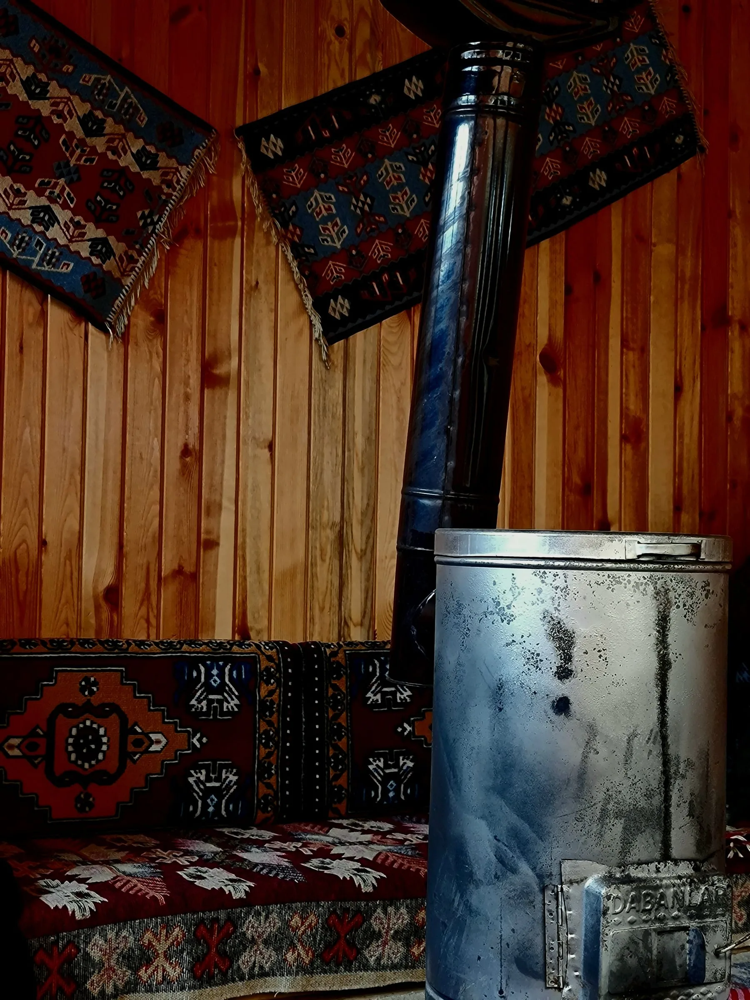
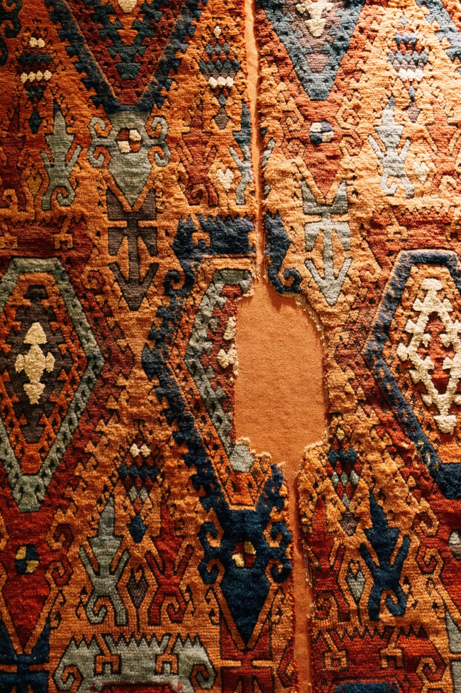
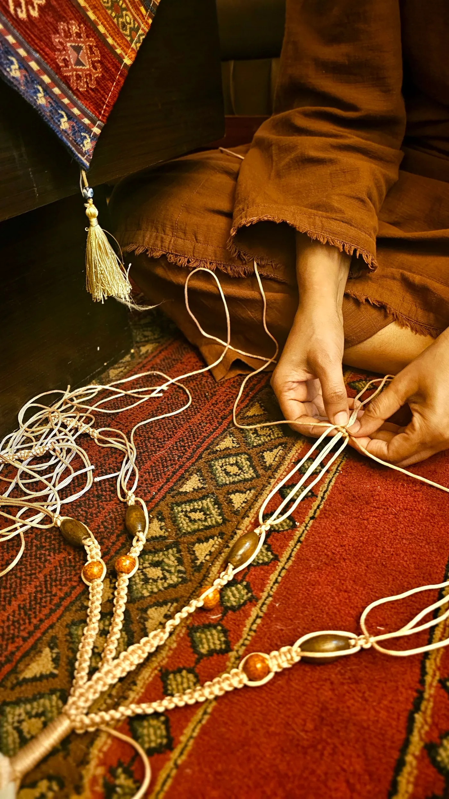

Arda €1,240*
Sample · 190 × 280 cm
A layered, expressive direction built from clay, olive, indigo, and textile fragments. It treats each carpet as a living object while keeping claims explicitly unverified.


ÉPOCAAn asymmetric field gives every piece its own tempo. The offset composition is expressive, but names, sample dimensions, and sample prices stay attached to the correct image.


The final shop could carry maker, origin, construction, age, and restoration stories only when ÉPOCA has evidence for them. Until then, the system makes room for those facts without pretending they exist.
Read the design note